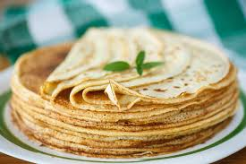

Crêpe

Description
This simple but delicious crêpe recipe can be made in minutes from ingredients that everyone has on hand.
What is Crêpe ? Crêpes are very thin pancakes. They can be served with a wide variety of sweet and savory fillings and toppings. The breakfast staple dates back to at least 13th-century France.
Ingredients
- 2 large eggs
- ½ cup milk
- ¼ teaspoon salt
- 1 cup all-purpose flour
- 2 tablespoons butter, melted
Steps
- Whisk the milk, water, eggs, and salt.
- Gradually whisk in the flour and butter.
- Scoop the batter onto a hot griddle.
- Cook until lightly browned on the bottom.
- Flip and continue cooking until done on both sides.
Home